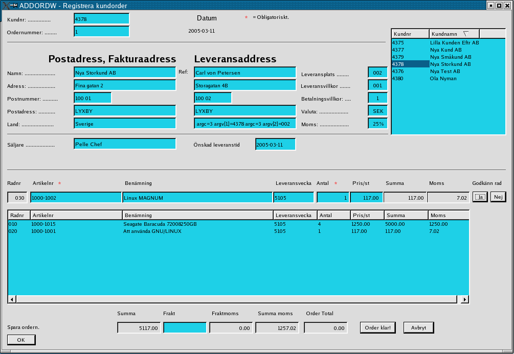
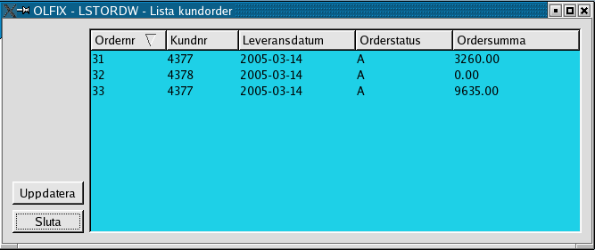
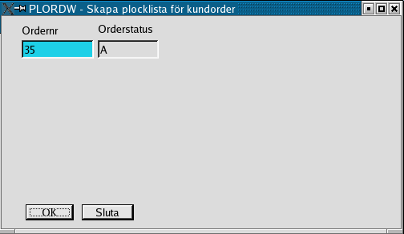
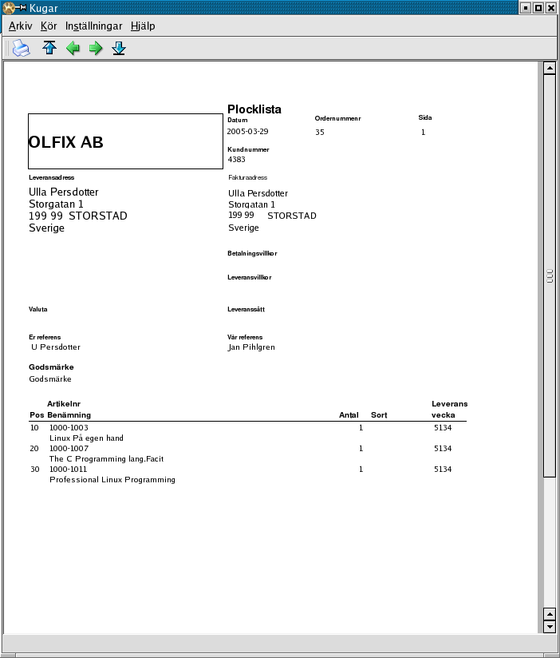
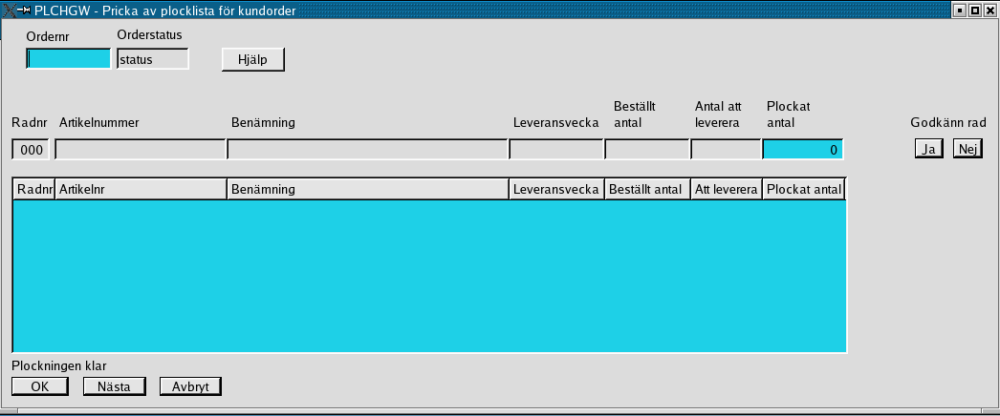
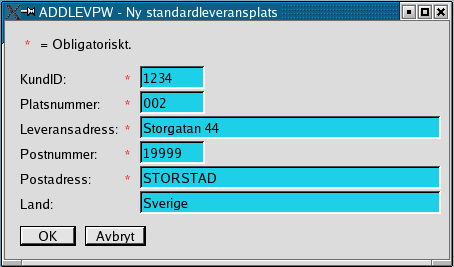

Order/Lager/Fakturering för Linuxsystem
Användarmanual
Kapitel Försäljning
Version 0.42
2005-04-26
This program is free software; you can
redistribute it and/or modify
it under the terms of the GNU General Public License as published by
the Free Software Foundation; either version 2 of the License, or
(at your option) any later version.
Copyright 2004 Jan Pihlgren.
Registrering av kundorder
Registrering av kundorder.

OBS! I alla fält du gör en förändring i
måste du avsluta med att trycka Enter för att informationen ska följa
med till databasen. Genom
att klicka på önskad rad av kunder så matas kundnumret in i fältet Kundnr. Det går också att skriva in
kundnumret direkt ifall man kan det i huvudet. När man tryckt på
”Enter” så hämtas kundens data och fylls i fälten.
I fall det inte
finns någon särskild leveransadress angiven för kunden så kopieras
postadressen till fälten för leveransadress. Samtidigt anges i detta
fall 000 in i fältet Leveransplats för att markera
att det inte finns någon särskild leveransplats registrerad på kunden.
Först kommer det dock upp en varning och meddelar att leveransplats
saknas. I detta fall klicka bara på knappen märkt OK. När detta är klart ställer
sig markören i fältet Artikelnr. Fyll i artikelnummer och tryck
”Enter” varvid Benämning fylls i. Acceptera benämningen genom
att trycka på ”Enter” eller ändra värdet och avsluta med ”Enter”. Leveransvecka
har fyllts i och kan accepteras eller ändras. Sedan är det dags att ange
vilket Antal som ska levereras. Värdet i fältet Pris/st
är ifyllt. När det accepterats eller ändrats och avslutats med ”Enter”
så beräknas Summa och Moms. Momsen beräknas utifrån den
momssats som åsats den produktklass artikeln tillhör. Markören ställer
sig på knappen Godkänn rad Ja. När man klickar på knappen så
flyttas radens värden ner i det underliggande fältet och alla fält,
Radnr, Artikelnr, Benämning, Antal, Pris/st, Summa och Moms, blankas ut
och markören ställer sig ånyo i fältet Artikelnr. Fältet Leveransvecka
blankas inte ut. I fall man upptäcker att en
tidigare orderrad är felaktig kan den ändras genom att klicka på den i
det stora fältet varpå den flyttas upp på raden för radregistrering.
När ändringen är klar och godkänd flyttas den tillbaka till det stora
fältet. När man är färdig med
radregistreringen får man själv flytta markören till fältet Frakt.
Man fyller i beloppet och trycker ”Enter” varpå fältet låses. Fältet Fraktmoms
beräknas efter den moms som finns angiven i fältet Moms (under
fältet Valuta). Fältet Summa moms är summan av momsen
för varje rad och Fraktmoms. Fältet Order Total anger orderns
totalbelopp inklusive moms. OBS! I och med att Frakt
accepteras kan ordern inte ändras. Valet står mellan att acceptera
ordern, Order klar! eller Avbryt.
Lista kundorder

Utskrift av plocklista för en kundorder.


Registrera plockat antal.
Utskrift av plocklista.
Registrera plockat antal.
Lista kundorder
Registrering av standardleveransplats
Om man ska nyregistrera en kund samtidigt,Se här.
När programmet startar
hämtas en lista med kunder upp så att man lätt kan hitta en kunds
kundnummer. Även fältet Önskad leveranstid fylls
i med dagens datum. Också fältet
Leveransvecka fylls i med inevarande veckas sista dag enlig utseendet ÅVVD.
Registrering av en ny kund samtidigt som man registrerar en kundorder.
Ange 0 (noll) i fältet Kundnr så får man manuellt fylla i alla uppgifter om kunden.
Programmet plockar upp nästa kundnr.
Ifall kunden inte har en särskild leveransadress kan uppgifterna kopieras från postadressen
genom att skriva 0 (noll) i fältet Leveransplats.
Avslutningsvis får man en fråga ifall man önskar spara uppgifterna som ny kund.
Frågan erhålls när man trycker ”Enter” i fältet Moms.
OBS! Betänk att det är begränsat antal uppgifter som registreras om kunden;
Kundnummer
Kundnamn
Adress
Postnummer
Postadress
Land
Referent
Säljare
Leveransplats (leveransplatsnummer)
Leveransvillkor (leveransvillkorsnummer)
Betalningsvillkor (betalningsvillkorsnummer)
Valuta
Som standardvärden, vilka ej påverkar kundordern, sätts på kunden:
Leveranssätt = 001
Ordererkännande = J
Plocklista = J
Följesedel = J
Expeditionsavgift = J
Fraktavgift = J
Kravbrev = J
Kreditlimit = 1000.00
Dröjmålsränta = J
Dröjmålsfaktura = J
Orderns huvusakliga leveransdatum. En orderrad kan ha eget, avvikande, leveransdatum.
Orderstatus:
A = Order under arbete
N = Normal status
F = Frisläppt
B = Slutbehandlad, ska plockas port
Ordersumma:
Ordersumma = Ordertotal inklusive moms.
Programmet använder sig av Kugar för att skapa en utskrift av plocklistan.
Exempel på plocklista.
Med PLCHGW registrerar man det antal som ska levereras.
Detta måste göras innan följesedel och faktura kan skrivas ut.
När plockningen registrerats så uppdateras lagersaldon mm.

Standardleveransplats är förberedda leveransadresser till kunder. Normalt så är standardleveransplats 001
kundens postadress och 002 är kundens leveransadress,
mottagningsadress, adressen ditt varor ska skickas. Det finns möjlighet
att registrera 999 leveransadresser för varje kund.

För varje leveransadress registreras KundID, Platsnummer, Leveransadress, Postnummer, Postadress samt Land. Ifall land utelämnas registreras ett – (minustecken).
I samband med registrering av en ny kund läggs standardleveransplats 001 och 002 upp.Bokföringsår: Tvåställig bokstavskombination som anger vilket bokföringsår som avses.